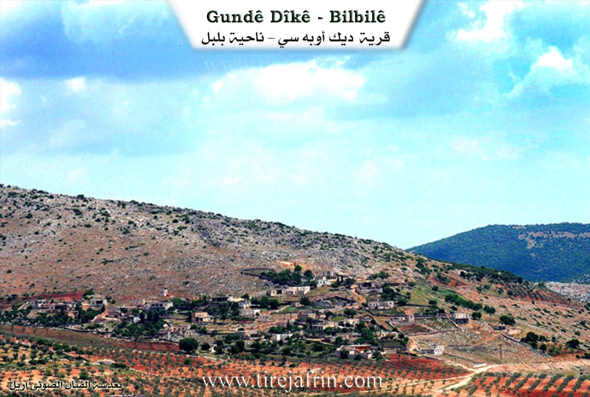
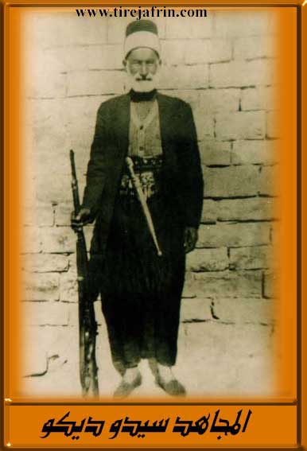

General Information
Nahiya (Subdistrict)
Bilbilê
Also Known As
Al-Dîk, Dîk Oba Si, Dîkê, الديك, ديك أوبه سي, ديكه
Families, Clans, etc.
Dîko
Photos



Basic Information about Dîkê
Source: Afrin 366
Shrines: Tirbê Gulyan
Other Landmarks: Gola avê
Summaries
I. Summary from TirejAfrin Site (English) of Dîkê
Source: https://www.tirejafrin.com/site/kura%20afrin%20%20%20bilbile%20-%20deka.htm
It is stated in the book جبل الكرد (عفرين) دراسة جغرافية Çiyayê Kurmênc (Efrîn): A Geographical Study: Gundê Dîk, Dîk Obasî, El Dîk /923 inhabitants, 24km, 710m/:
The name of the village is attributed to the Dîko family, who were the first inhabitants of the village. The official Ottoman name means the group of the rooster.
It is a small village located on a high, forested mountain shoulder, elongated in the shape of a rocky cliff extending from the east to the west.
It is stated in the book عفرين .... نهرها وروابيها الخضراء Efrîn... Her River and Her Green Hills: Dîk Obasî is a medium sized village located at the beginning of the highest southeastern slope adjacent to the summit of a furrowed limestone mountain in the middle of the northern section of the mentioned massif. It is 25km away from the town of Bilbil towards the southwest. Valleys and watercourses surround it from all sides, making access to it difficult.
It is bordered to the north by a steep slope, a plain, Benda Eşûne (Eşûne dam), and the village of Gêlanlî. It is bordered to the south by a slope, Geliyê Sêlê (Sêlê valley), the high mountain range of Çiyayê Hawar (Hawar mountain), and the village of Dax Obasî. It is bordered to the west by a slope, a valley planted with olive and walnut trees, and the village of Çetel Qiyû. It is bordered to the east by a steep slope, Geliyê Sêlê (Sêlê valley), and the village of Eşûne.
The number of its houses is about 100 houses and its age is about 300 years. Its old houses are stone and mud with flat wooden roofs, while the modern ones are cement but are few. A primary school is available there. The village drinks from cisterns where rainwater is collected in winter or from artesian wells dug next to the houses.
The residents work in the cultivation of olives, legumes, and vines through rain fed agriculture on an area of 100 hectares, alongside raising sheep and goats. Some of them also work in the charcoal industry.
The road from it to the public road passing through the village of Eşûne is dirt and mountainous, not paved. From the western side up to Riya Reco (Reco road), it is paved up to the center of the village.
Village Mukhtar: Henan Şêxo Hemo
Sources of Information:
- Book: جبل الكرد (عفرين) دراسة جغرافية Çiyayê Kurmênc (Efrîn): A Geographical Study by د. محمد عبدو علي Dr. Mihemed Ebdo Elî.
- Book: عفرين .... نهرها وروابيها الخضراء Efrîn... Her River and Her Green Hills by عبدالرحمن محمد Ebdulrehman Mihemed from the village of Qetme.
- Studies of Navenda Tirej Soft / Ebdulrehman Hacî Osman.
- Some residents of the villages.
Preparation and Execution: Director of the Tirej Efrîn website: Ebdulrehman Hacî Osman 20/12/2013
II. Summary of Dîkê from Afrin 366
Source: https://www.youtube.com/watch?v=zK3rkwwaJHo
The village of Dîkê, situated in the administrative district of Bilbil in the Afrin region, is characterized by its rugged, mountainous terrain featuring cliffs (zinar) and deep valleys (gelî). Although officially part of the Bilbil district, residents note that geographically and regarding their services and mechanics, they are actually closer to Reco, though administrative attempts to be rezoned to Reco were unsuccessful. The village is surrounded by olive groves, which form a central part of the local livelihood.
The social structure of Dîkê remains tight-knit despite the pressures of migration. According to local elders, the village currently houses approximately 80 to 85 families permanently. However, the total number of households, including those displaced to Aleppo or living abroad, exceeds 100. The transcript highlights the presence of a strong diaspora community; specific residents like Seidul and Elî are mentioned as living in Holland. During the filming, the village was celebrating a wedding for a groom named Heyder, who was bringing a bride from the neighboring village of Soryo. Prominent local figures interviewed include Apê Mihemed, Sit Îlham, and elderly women like Zeyneb and Hediye, who reflect on the hardships of the past compared to the loss of social warmth in the present.
Infrastructure is a critical challenge for Dîkê. Residents report a severe lack of water and electricity. While there is a well (bîr), it is non-functional, forcing villagers to purchase water via tractor delivery from neighboring areas like Qêsim, costing up to 20 US dollars per tank, a significant burden for the community. The host describes the village as "şa'bî" (popular/humble), noting the hospitality and simplicity of its people compared to other regions.
The documentary concludes at a significant site nearby called Gulyan (specifically Guliyê Jor), which serves as a connecting point between Dîkê and the neighboring village of Qêsim. Here, the host visits Tirbê Gulyan, a cemetery and shrine area where the ancestors of the villagers are buried. The site formerly hosted a water feature known as Gola avê (the water lake/pond), which historically served as a collection point for water, though the transcript implies it may no longer be active or is diminished.
Transcriptions and Subtitles
| Source | Video | Subtitles | Transcript |
|---|---|---|---|
| Afrin 366 1 | Watch Video | Download SRT | View Transcript |
Foundation/Origin Information of Dîkê
The Dîku family were the first inhabitants of the village.
Source: TirejAfrin Site
Possible Village Name Meaning of Dîkê
The village name is attributed to the Dîku family. The official Ottoman name meaning "community of Dîk."
Source: TirejAfrin Site